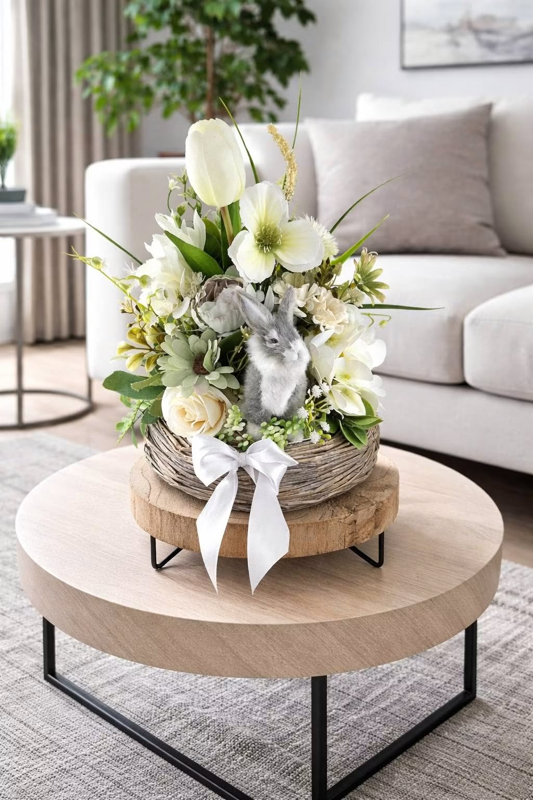
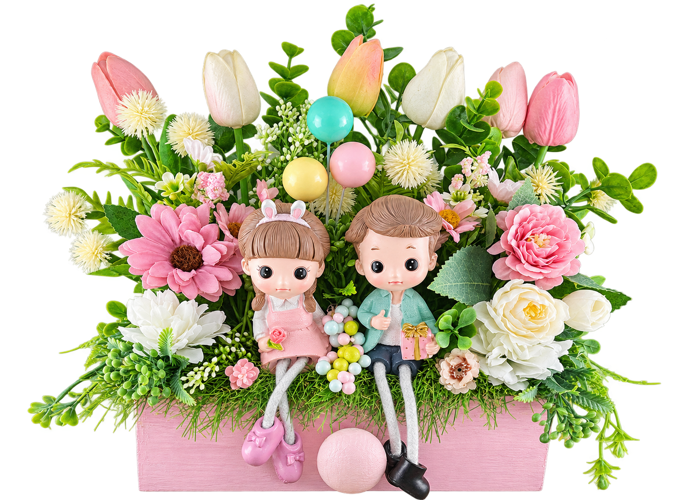
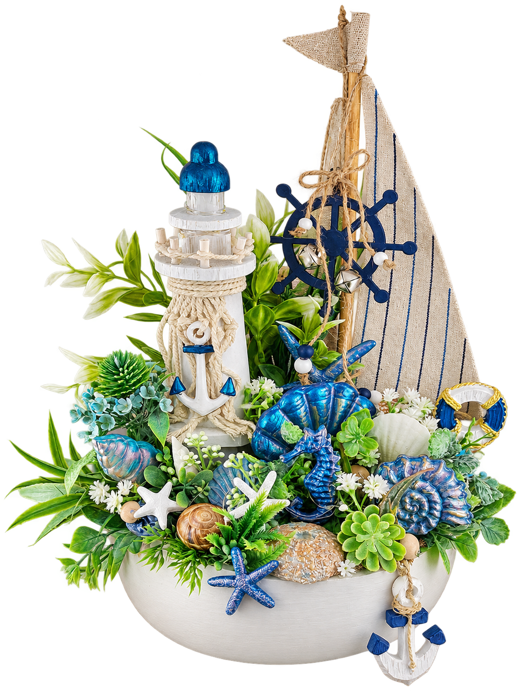
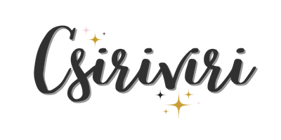

Egy kis varázslat minden alkalomra
Legyen szó vidám ünneplésről, színes élményekről vagy egyedi dekorációkról, a Csirivirinél megtalálod, amitől igazán különleges lesz az alkalom.

Szülinapi
zsúr
Változatos, életkorhoz igazított játékokkal és izgalmas csapatversenyekkel gondoskodom a felejthetetlen szülinapi élményekről!
Részletek
Arcfestés és
csillámtetoválás
Mesés arcfestések és csillogó tetoválások, számtalan választható mintával, hogy még színesebbek legyenek a különleges alkalmak!
Részletek





Kézműves
díszek
Egyedi, szeretettel készült dekorációk és ajándékok ünnepekre, különleges alkalmakra vagy otthonod szépítésére.
RészletekMiért válaszd a Csirivirit?
Mert a legjobb ötletek személyre szabva születnek
Nincs két egyforma ünnep, ahogy két egyforma elképzelés sem. A Csirivirinél a kreativitás és a személyes odafigyelés kéz a kézben jár, legyen szó vidám gyerekprogramokról, színes arcfestésről vagy egyedi, kézzel készült dekorációkról. Minden apró részlet számít, hogy a végeredmény igazán hozzád illő legyen.
Szülinapi programok a gyerekekre szabva
A játékokat és csapatversenyeket a gyerekek életkorához, létszámához és érdeklődéséhez igazítom, hogy mindenki jól érezze magát, és örömmel vegyen részt a közös játékban.
Élmények ott, ahol szeretnétek
A gyerekzsúrokat, arcfestést és csillámtetoválást Budapesten és környékén, az általad választott helyszínen vállalom. Legyen szó otthoni ünneplésről vagy nagyobb rendezvényről, a részleteket előre egyeztetjük.
Egyedi díszek, a te elképzeléseid alapján
Legyen szó egy különleges ajándékról vagy otthonod új díszéről, szívesen megvalósítom a saját elképzeléseidet is. A részleteket közösen egyeztetjük, minden alkotás szeretettel, kézzel készül, és országos szállítással is rendelhető.
A Csiriviri története
Örülök, hogy benéztél hozzám!
Évi vagyok, a Csiriviri megálmodója és alkotója. Vállalkozásomat 2012-ben indítottam útjára, de a játék, a kreativitás és az örömszerzés szeretete már jóval korábban az életem része volt.
Óvodapedagógusként mindig közel álltak hozzám a gyermekek. Később gyerekzsúrok és tematikus születésnapi programok szervezésével kezdtem foglalkozni, ahol vidám játékokkal és közös élményekkel igyekeztem emlékezetessé tenni a nagy napokat. Hogy még színesebbé tehessem ezeket az alkalmakat, arcfestő és csillámtetováló tanfolyamot is elvégeztem.
A kézműveskedés szeretete is régóta elkísér. Eleinte családomat és barátaimat leptem meg saját készítésű ajándékokkal, ma pedig már megrendelőim egyedi elképzeléseit is örömmel valósítom meg. Legyen szó ünnepi díszekről vagy személyre szabott dekorációkról, minden alkotásomat szívvel-lélekkel készítem.
A Csiriviri számomra több mint munka: a kreatív világom, ahol a legnagyobb öröm, ha mosolyt csalhatok mások arcára.

A kézműves világból
Egy dísz, amit jó hazavinni. Vagy továbbadni.
Az aktuális alkotásokat a Facebook-oldalon találod. Ha valamelyik megtetszik, vagy saját ötleted van, írj Messenger-üzenetet, és egyeztetjük a lehetőségeket.
Megnézem az aktuális díszeket


Visszajelzések
A legkedvesebb üzenetek
Szülinapi élményekről és kézműves alkotásokról írták Évinek.
„Mindenkitől azt kaptuk, hogy jól érezték magukat a gyerekek – de szerintem látszott is. Kitti nagyon boldog azóta is a fellegekben száll. Remélem még találkozunk!”Szülinapi visszajelzés
„Csodaszép asztali díszt kaptam, tökéletes csomagolásban és hamar meg is érkezett. Minden az előzetesen megbeszéltek szerint történt. 🙂 Teljes szívből ajánlom!”Éva, vásárlói visszajelzés
Kapcsolat
Felkeltettem az érdeklődésedet?
Kérj ajánlatot az űrlapon, vagy keress az alábbi elérhetőségeim egyikén. Örömmel egyeztetek veled az elképzelésedről.
